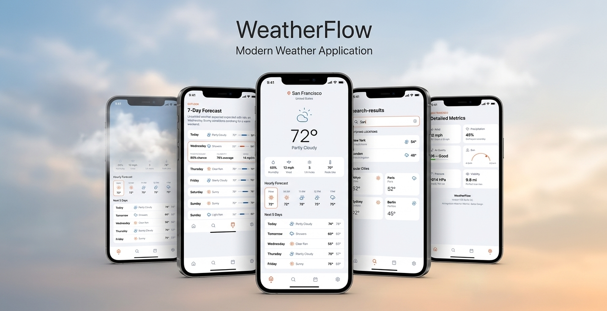
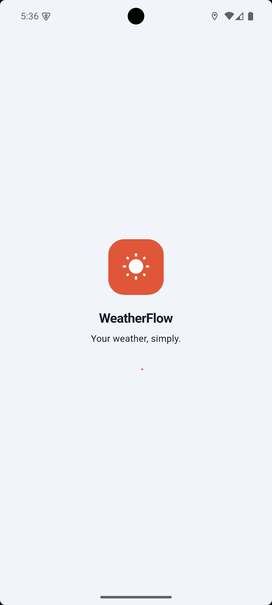
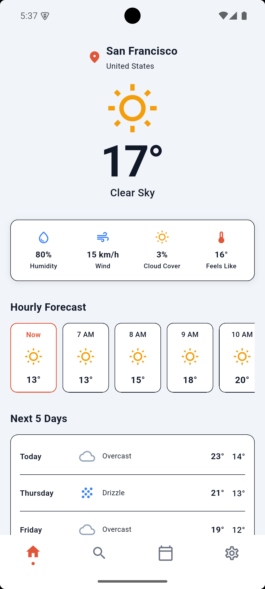
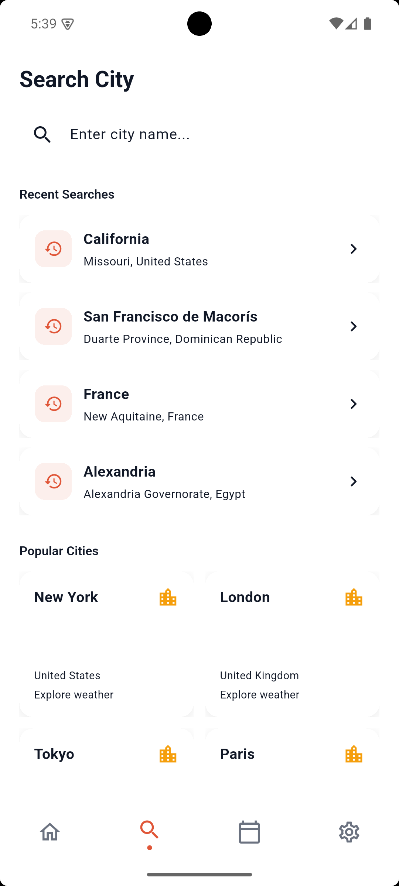
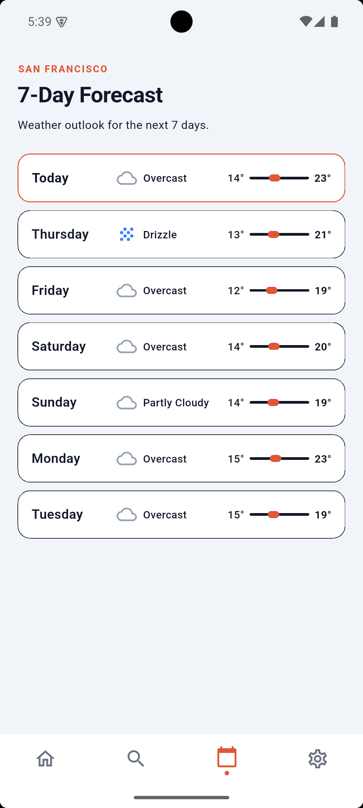
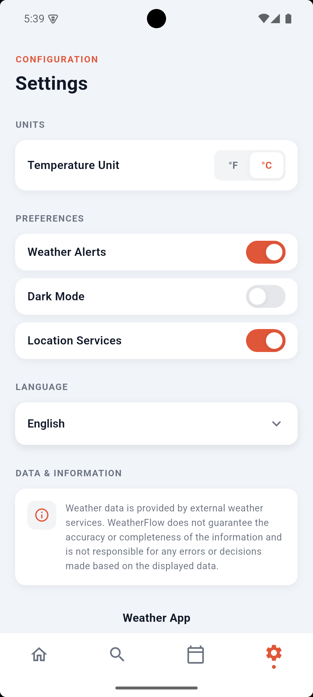
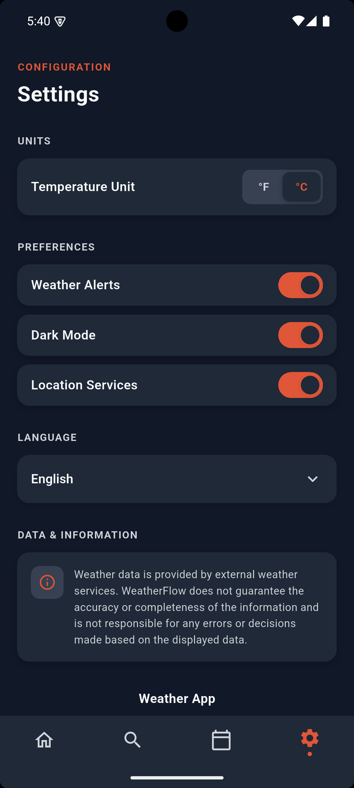
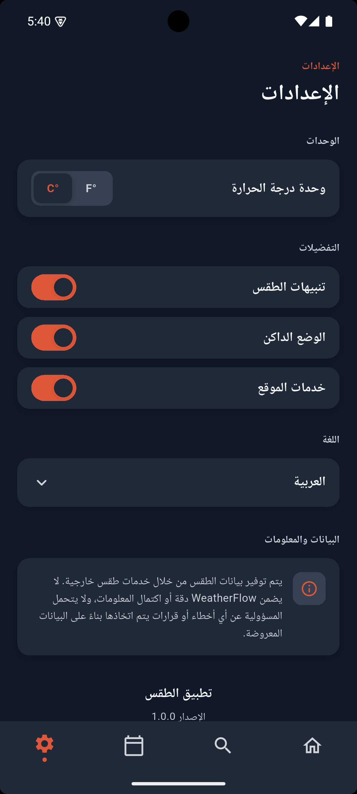
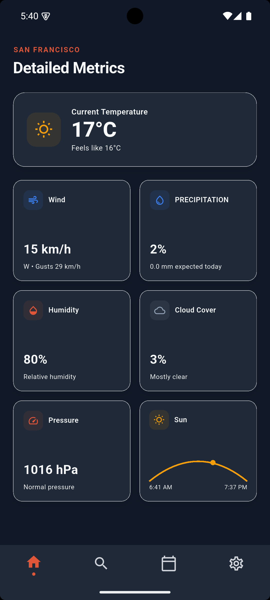

Weather App
A Flutter weather app that fetches live forecasts through a REST API and keeps working with cached data when the connection drops.

Project Overview
Overview
Weather App is a Flutter application that retrieves live weather data through a REST API and presents current conditions and forecasts in a clean, responsive interface.
Problem
Weather apps often feel cluttered, or stop being useful the moment a connection drops, leaving users without any information at all.
Solution
A focused weather experience with a clear current-conditions view, offline-friendly caching so the last known forecast is still available without a connection, and a responsive layout across screen sizes.
Key Features
- Live weather data via REST API integration
- Offline access to the last cached forecast
- Clean current-conditions and forecast views
- Responsive layout across devices
- Localized date, time and unit formatting
Screenshots
Placeholder gallery — swap these files at the same paths with real screenshots.








Project Demo
Video placeholder — add demo.mp4 at the path below and it will be ready to wire up to a real player.
 /assets/projects/weather_app/demo.mp4
/assets/projects/weather_app/demo.mp4
Technical Highlights
- Flutter
- Dart
- BLoC / Cubit
- GoRouter
- REST API
- Dio
- Localization
- Offline Cached Weather
- Responsive UI